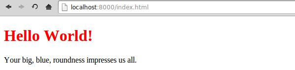
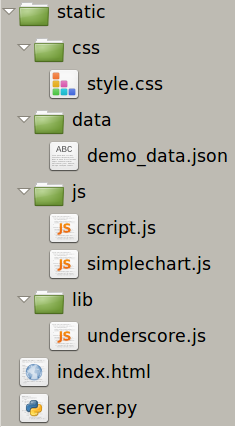

A short, practical guide to making the leap from OS based visualizations to something you can share with the world at the click of a button. Starring Python, Javascript and D3.
Kyran Dale / http://kyrandale.comThis is a compliment to previous PyData talk with a practical edge. Anyone made quesy by the sight of code should leave the room now.
The stress will be on developing some best-practices and getting a firm foundation in place for building Python + Javascript visualizations.
Some very cool initiatives at the moment like the D3-based mpld3 (see IPython Notebook), Vincent (Vega-based) and d3py. But this talk is about building from ground up - once you have that ability most intermediate solutions will feel restrictive. Novel, creative data-visualization is a key aim here.
data = [
{'title': 'foo', 'message': 'bar', (...)},
{'title': 'baz', 'message': 'qux', (...)}, ...
]
data = {
'foo': {'message': 'bar', (...)},
'baz':{'message': 'qux', (...)}, ...
}
{
"$schema": "http://json-schema.org/draft-04/schema#",
"title": "Product",
"description": "A product from Acme's catalog",
"type": "object",
"properties": {
"id": {
"description": "The unique identifier for a product",
"type": "integer"
}
},
"required": ["id"]
}
#data.json:
#{"foo": [1, 2, 3], "baa": {"Hello": "World!"}
In [1] import json
# load data from a file
In [2] with open("data.json") as json_file:
json_data = json.load(json_file)
json_data
Out[3]: {u'baa': {u'Hello': u'World!'}, u'foo': [1, 2, 3]}
# or from a string
In [4] jdata = json.load('{"foo": [1, 2, 3], "baa": {"Hello": "World!"}')
In [5]: jdata
Out[6]: {u'baa': {u'Hello': u'World!'}, u'foo': [1, 2, 3]}
# and equivalent json.dump and json.dumps
# server.py
import json
data = [{'title':'Hello World!', 'body':"Your big, blue, roundness impresses us all."}]
json.dump(data, open('demo_data.json', 'w'))
<!DOCTYPE html>
The easy way, from the project directory just type and enter
$ python -m SimpleHTTPServer
Open the default address in your browser and hey presto!
Note: node's http-server is faster and can handle streaming video etc..
$ npm install http-server -g; http-server -p 8000 A trivial data pipeline from Python -> JSON -> Javascript but most data visualization work will be increasingly sophisticated variations on this theme.
Best-practice 101, getting those files organized early will save a lot of time in the long run.

<link rel="stylesheet" href="static/css/style.css">
json data from the '/api/<id>' call
<script src="http://d3js.org/d3.v3.min.js"></script>
<script src="static/js/simplechart.js"></script>
<script src="static/js/script.js"></script>
#!flask/bin/python
from flask import Flask, make_response
import pandas as pd
app = Flask(__name__)
dummy_data = {
0: pd.DataFrame({'name':['A', 'B', 'C', 'D'], 'value':[4, 2, 8, 5]}),
1: pd.DataFrame({'name':['A', 'B', 'C'], 'value':[13, 29, 9]}),
2: pd.DataFrame({'name':['A', 'B', 'C','D', 'E', 'F'], 'value':[3, 12, 9, 21, 15, 7]})
}
@app.route('/')
def index():
return make_response(open('index.html').read())
@app.route('/api/<int:id>')
def api(id):
return make_response(dummy_data[id].to_json(orient='records'))
if __name__ == '__main__':
app.run(debug = True)
var SimpleChart = function() {
var margin = {top: 15, right: 30, bottom: 15, left: 40},
width = 600 - margin.left - margin.right,
height = 400 - margin.top - margin.bottom;
var x = d3.scale.ordinal().rangeRoundBands([0, width], 0.1);
var y = d3.scale.linear().range([height, 0]);
var xAxis = d3.svg.axis().scale(x).orient("bottom");
var yAxis = d3.svg.axis().scale(y).orient("left");
var chart = function(selection) {
selection.each(function(data) {
chart.svg = d3.select(this).selectAll('g').data([data]);
var gEnter = chart.svg.enter().append('g');
gEnter.append("g").attr("class", "x axis");
gEnter.append("g").attr("class", "y axis");
gEnter.append("g").attr("class", "plot-area");
x.domain(data.map(function(d) { return d.name; }));
y.domain([0, d3.max(data, function(d) { return d.value; })]);
chart.svg
.attr("width", width + margin.left + margin.right)
.attr("height", height + margin.top + margin.bottom);
var g = chart.svg
.attr("transform", "translate(" + margin.left + "," + margin.top + ")");
g.select('.x.axis')
.attr("transform", "translate(0," + height + ")")
.transition().duration(1000).call(xAxis);
g.select('.y.axis')
.transition().duration(1000).call(yAxis);
var cd = g.select('.plot-area').selectAll('.bar')
.data(data);
cd.enter().append("svg:rect")
.attr("class", "bar");
cd.exit()remove();
cd.transition().duration(1000)
.attr("x", function(d) { return x(d.name); })
.attr("y", function(d) { return y(d.value); })
.attr("height", function(d) { return height - y(d.value); })
.attr("width", x.rangeBand());
});
};
return chart;
};
Histograms and barcharts with menu-filter and chart-filter